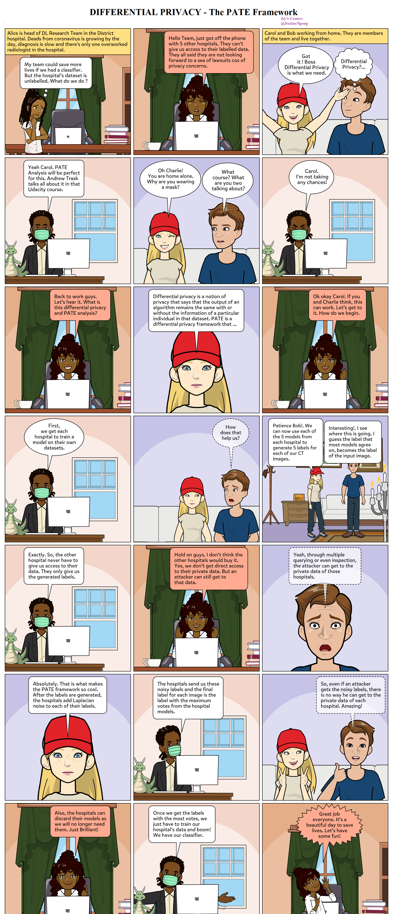

PATE Framework — A Comic
2021
A short comic representing the PATE Framework — a differential-privacy technique for training machine learning models on sensitive data. Alice's team of hospitals wants a COVID-19 classifier; the catch is that none of them can share patient data directly. The comic walks through how PATE lets them collaborate while keeping each hospital's data private.
Open the image at native resolution →
